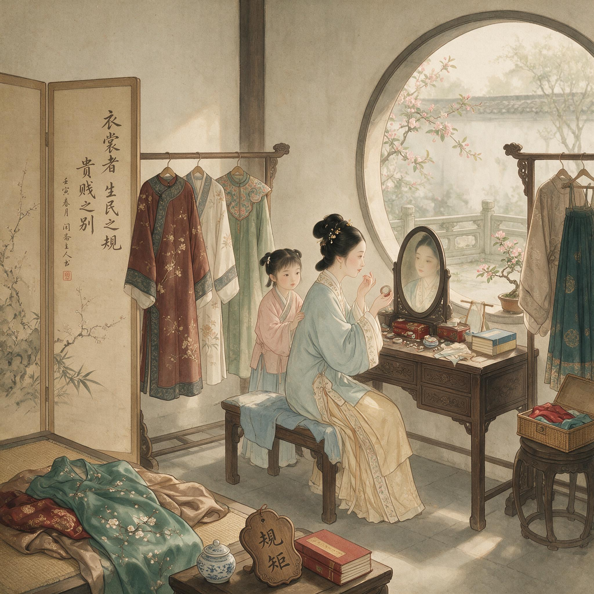

第 2 章
衣裳里的规矩
苏州府城东北街的陆家宅院里，婢女阿素从二进院的天井穿过时，手里捧着一只朱漆托盘。托盘上不是茶食，而是一块折叠整齐的月白绸料，旁边搁着一根竹尺和一把剪子。她穿过正厅后廊，踏上通往后楼

衣裳里的规矩：历史出版插图
AI 生成插图，非史实影像。
的木梯——这道梯子今早刚被管事从库房里搬出来重新架好，因为前厅的议事拖得太久了，久到需要往后楼递东西。
阿素爬上二楼时，陆家三小姐正坐在窗下绣墩上。窗扉开着半扇，不是为了看景——后窗外面是邻家的马头墙，灰扑扑的砖面上只长了些青苔——而是为了借光。绣绷上的丝线在秋日上午的光线里泛着温润的光泽，但她的眼睛并没有落在针脚上。她在听。
前厅里的说话声从楼下天井斜着传上来，被两道墙和一层楼板滤过之后，只剩下模糊的音节，辨不出完整的句子。但声调是能听出来的：父亲的声音比平日高了些，大哥在应和，中间夹着一个陌生人的嗓音，不紧不慢，像是在谈价钱。阿素把托盘搁在靠墙的条桌上，低声说了句什么。
三小姐的目光从绣绷上移过来，落在月白绸料上，停了片刻，然后伸出手去摸了一下那块绸子的边缘。这个动作很轻，指尖擦过织物表面时几乎没有任何声响，但她的指腹感觉到了经纬的密度——比去年那件夹袄的面料要细密得多。这块绸料是前厅正在进行的谈话的一部分。三天前，父亲从杭州回来，带回了一个消息：苏州织造局有一批库存绸料要出清，价格比市面低两成，但需要一次性吃进足够的数量。今天来的客人是城里另一家绸缎铺的掌柜，他愿意和陆家合买这批货。
前厅里正在谈的，就是这笔买卖的分配比例和付款方式。但三小姐不知道这些细节。她只知道今天早上母亲让阿素去前厅传话时，顺带吩咐了一句：看看那批绸料里有没有月白的。这句吩咐本身就是一个信息碎片——它意味着母亲在为女儿们的冬衣做打算，也意味着今年家里的银钱周转可能比往年轻松一些，因为月白绸需要配好染料，而好的靛蓝染价不低。
此刻，这块月白绸就搁在条桌上，竹尺和剪子摆在旁边，等待着一个尚未做出的决定：用它来做一件夹袄，还是做一件褙子？袖口放宽多少？领缘用素缎还是织金？这些决定不会在前厅做出。它们会在后楼这个房间里，由母亲、女儿和裁缝在量体、比样、算料的过程中一点点敲定。
而这些看似琐碎的选择，最终将决定这件衣裳穿在身上时，离规矩有多远。它穿在身体上，裹住皮肉，遮蔽肌肤，被礼教规定为女德的第一道防线。但它同时也是最容易被悄悄改写的领域——因为衣裳的规制太细密了，细密到每一个接缝处都可能藏进一点私心。
明太祖朱元璋在洪武元年颁布的服制诏令，其精细程度令后人吃惊。他从面料、样式、尺寸、颜色四个维度切入了臣民的身体：命妇可以用绫罗，庶民妻女只能用绸绢棉布；命妇的衫子可以用真红、鸦青、黄色，庶民妻女只能用桃红、紫绿及各种浅淡颜色；命妇的首饰可以用金玉珠翠，庶民妻女只能用银镀金或素银。
这些规定不是泛泛而谈的上下有等，而是精确到可以稽查的程度——一件衣裳的面料、颜色、纹样、尺寸，每一个要素都是一个等级标记。但问题恰恰出在这种细密上。一个符号系统越是复杂精细，其可被微调的空间就越大。如果禁令只规定庶民不得用金，那么银镀金算不算违制？如果禁令规定不得用织金，那么在领缘上加一道只有三分宽的织金边饰算不算违制？如果禁令规定袖宽不得过一尺，那么一尺零五分算不算过？这些缝隙不是法律条文里的漏洞，而是从条文落到布料上时必然产生的公差。
万历年间松江府的一份地方志在记录本地风俗时，留下了一句耐人寻味的话。纂修者注意到，妇人衣饰近年渐趋华侈，虽士庶之家亦有用织金、妆花者，但随即又补了一句：所用不过寸许。这个不过寸许就是关键所在。它不是公然违抗禁令，而是在禁令的边缘做文章。一寸宽的织金缘边，在严格的法律意义上当然属于违制，但在日常生活的视觉秩序里，它只是一个模糊地带——谁会在意领口上一寸宽的装饰？
谁会因为这个去举报一个士绅家庭的妻女？这种微调的逻辑，与后楼那块月白绸的命运直接相关。当裁缝被请进后楼为三小姐量身时，袖口的尺寸会在竹尺下被反复斟酌。按洪武年间的规定，庶民妻女的衫袖宽不得过一尺。
但到了万历年间，这个标准早已在实际生活中被突破。嘉靖年间修的《吴江县志》记载了这种变化：妇人衣在弘治间犹朴素，后渐趋华靡，袖口宽至尺二三寸。尺二三寸，比规定宽出了两三寸。这两三寸不是一次加上去的，而是一寸一寸地放宽的——每一次放宽都在试探边界，每一次试探都没有遭到惩罚，于是下一次就再放宽一寸。
这种渐进式的违制，在服饰史上有一个专门的概念：时样。时样不是官方的标准样式，而是在特定时期、特定地域流行的实际穿法。它的权威来源不是《会典》，而是街市上的绸缎铺、裁缝店和女性之间的口耳相传。
一个时样从出现到流行，通常经历这样的路径：先是某个富户的女眷在衣裳上做了某种变化——比如把领缘加高半寸，或者在袖口绣一圈暗花——然后被亲戚邻里的女眷看到，觉得好看，就照着做。裁缝们在各家各户之间走动时，会把这种新样式带到下一家。绸缎铺的掌柜会注意到某种面料或某种颜色的需求突然增加，于是调整进货。这样，一个微小的个人选择就会在几个月内变成一股地方性的潮流。
而官府对此的反应往往是滞后的。当一种时样已经流行开来之后，地方官才可能在修志时记上一笔，或者在告示中加以申斥。但申斥归申斥，真正因为衣袖宽了一寸就被处罚的案例，在明清两代的地方档案中几乎找不到。这不是因为官府不关心服饰违制，而是因为执法的成本太高了——你不可能让衙役站在街上去量每一个女人的袖口宽度。于是，禁令和实际穿戴之间的距离，就成了一条不断移动的边界。这条边界不是由某个权威划定的，而是由无数个日常选择共同塑造的。
每一个选择都很小——袖口放宽一寸、领缘加一道织金、裙底露出一角绣鞋——但累积起来，就构成了一种对官方服制的日常偏离。这种偏离并非无人察觉，而是被地方社会默许。万历年间松江府的地方志在批评妇人衣饰“渐趋华侈”时，紧接着补了一句“所用不过寸许”，语气与其说是痛斥，不如说是承认了这类微调在日常视觉秩序中的可容忍性。地方官绅并非看不见这些寸许的织金和放宽的袖口，而是选择性地视而不见——因为追究它们既无利可图，又可能得罪同侪女眷。于是，禁令的边界就在这种集体默许中一寸一寸地后退。
现在回到陆家后楼那块月白绸。它的颜色本身就处在一个模糊地带。按洪武年间的规定，月白色属于浅淡颜色，庶民妻女是可以用的。但问题在于，月白不是一种固定的颜色。它是在白坯绸上染一层极淡的靛蓝，染色的深浅完全取决于染料浓度和浸染次数。浅一点的月白接近白色，深一点的月白接近天青。而天青色在明代是命妇才可以用的颜色。所以，当染坊的师傅接到陆家这批月白绸的染色订单时，他实际上掌握着一个微妙的权力：他可以把颜色调得浅一些，让它稳稳地落在庶民的色谱之内；也可以调得深一些，让它悄悄地靠近命妇的色谱边缘。
这个决定通常不是由染坊师傅单独做出的，而是与主顾家的女眷商量着定的。主顾会拿来一块色样——可能是从去年的旧衣上剪下的一角，也可能是从绸缎铺里借来的一块布头——然后说照这个染。
染坊师傅就照着色样调染料，浸染之后拿出来比对，浅了再加染，深了就漂洗。这个过程看似简单，实则包含了一整套关于颜色的社会知识。主顾家的女眷在选定色样时，心里是有一杆秤的：这个颜色够不够雅，会不会太艳，会不会被人说闲话，会不会太素净显得寒酸。这些考量不是写在纸上的规矩，而是在日常生活中通过观察、比较、议论形成的一种集体判断力。一个闺秀从小跟着母亲看衣料、选颜色、比花样，就是在学习这套判断力。她知道月白比纯白耐看，比天青本分，比桃红清雅。这些词汇表面上是在谈审美，实际上每一个词都在标定一个社会位置。
这种通过颜色进行的身份标定，在明清两代的服饰制度中占据着核心位置。洪武年间的服制令之所以把颜色作为最重要的等级标记之一，是因为颜色是最容易被识别的视觉信号。在街市上，隔着几十步远，你未必能看清一个人衣服的面料和纹样，但你一定能看清它的颜色。一件大红色的袍子和一件桃红色的袍子，在视觉上的差异是即时而明确的。
所以颜色禁令执行起来最容易，违制也最容易被发现。但到了明中叶以后，这个颜色体系开始从内部松动。
松动的原因是多重的。首先是染色技术的进步。明代的染坊已经能够调配出极其丰富的中间色——月白、天青、粉红、鹅黄、藕荷、秋香——这些颜色不在禁令的色谱之内，却又接近禁令色谱的某些色相。一个月白偏深的绸衫，站在室内看是月白，走到阳光下看却泛着一层天青的光泽。这种模棱两可的颜色，让禁令的执行变得困难。
其次是江南织造业的繁荣带来的面料多样化。苏州、杭州、南京的织造局和民间机坊生产出了大量精美的丝织品——缎、罗、纱、绉、绸——每一种面料的质地和光泽都会影响颜色的呈现效果。同样的染料染在棉布上和染在缎子上，呈现出来的颜色完全不同。缎子的光泽会让浅色显得更亮，让深色显得更沉。这意味着，一个士绅家庭的女子即使穿着合法的浅淡颜色，只要面料是上好的缎子，整体效果就会比穿着同样颜色的棉布衣裳要华美得多。万历年间苏州市场上，不同面料的价格差距是惊人的。
根据当时的地方文献和笔记小说中的零星记载，可以大致复原一份价格谱系：一匹上等素缎的价格约在三两银子左右，一匹中等花缎约二两，一匹湖绉约一两五钱，一匹棉布则不过二三钱银子。这还只是素料的价钱。如果加上染色、织金、妆花等工艺，价格还要再翻倍。一件成年女子的夹袄，大约需要一匹半到两匹面料，再加上里衬、纽扣、镶边等辅料，以及裁缝的工钱——一个熟练裁缝做一件夹袄的工钱大约在三到五钱银子之间——一件体面的夹袄总造价至少在五两银子以上。
五两银子是什么概念？万历年间江南一个普通士绅家庭的年收入，包括田租、俸禄或经商收入，大约在百两到数百两之间不等。一个婢女的身价大约在五到十两之间。一桌像样的酒席大约值一两银子。所以一件五两银子的夹袄，相当于一个婢女的身价，或者五桌酒席的开销。这不是一笔小数目。
但这还只是中等水平的衣裳。如果要做一件真正讲究的夹袄——面料用上等缎子，染色用最好的靛蓝，领缘加一道织金边饰，袖口绣一圈暗花——造价轻松就能突破十两。
而如果用的是妆花缎或者织金缎，那就更贵了，一匹料子就要五六两甚至更高。这些价格数字落到一个家庭的日常账簿上时，衣裳就不再只是衣裳了，它是一个家庭经济状况的直观指标。陆家三小姐的那块月白绸，光面料本身大约值一两二钱银子——这是按那批库存绸料的折扣价算的。如果按市价，同样的绸料要一两五钱左右。加上染色费约二钱、裁缝工费约三钱、里衬和其他辅料约五钱，这件夹袄的总造价大约在二两五钱银子上下。这在士绅家庭中算是中等偏上的水平——不算寒酸，但也谈不上奢侈。
但问题在于，这件夹袄最终呈现出来的视觉效果，不完全取决于它的物料成本。裁缝的手艺、配色的眼光、细节的处理，这些软性的因素同样重要，有时甚至更重要。一个手艺好的裁缝，可以在不增加面料成本的情况下，通过调整剪裁让衣裳更合身、更挺括；一个有眼光的配色者，可以在不违反禁令的前提下，通过色彩搭配让整体效果更雅致、更出挑。
这些微妙的差异，不是用银子能直接量度的，但它们恰恰是女性在衣裳上施展个人趣味和身份信号的空间。
现在要进入本章最核心的物质细节：一件衣裳的具体构造，以及在这些构造中规矩是如何被悄悄改写的。先从领缘说起。明代女衫的领子通常是交领或圆领，领口边缘会用另一块面料做镶边，称为领缘。按洪武年间的服制规定，庶民妻女不得用织金、妆花等工艺，所以领缘理论上只能用素缎或素绢。但到了万历年间，江南士绅家庭女子的衣裳上，领缘用织金已经相当普遍。不过这种织金往往不是整条领缘都用金线织成——那样太贵也太招摇——而是只在领缘的正中间织入一道极细的金线，宽度不过两三分。这样一道细金线，在正常社交距离下几乎看不出来，但在近处却会闪烁出隐约的光泽。
这种讲究一点的逻辑，同样体现在袖口上。明代女衫的袖口通常也会镶边，称为袖缘。袖缘的宽度和装饰程度，是另一个可以被微调的参数。按照规定，庶民妻女的袖缘应该用素色面料，宽度不超过一寸。
但实际穿戴中，袖缘往往被加宽到一寸半甚至两寸，面料也会选用与衣身不同的颜色或质地以形成对比。更有甚者，会在袖缘的内侧绣上暗花——平时袖子垂着时看不见，只有在抬手或递物时才会露出一角绣纹。这种藏在袖口内侧的绣花，不为外人看，只为自己知道它的存在。
然后是裙子。明代女子的下裳以裙为主，其中最具代表性的是马面裙。马面裙的结构是前后各有一块长方形的平幅裙门，两侧打褶。裙门的宽度、褶子的数量和深度、裙摆的幅度，都是可以被调整的参数。
洪武年间对裙子的规定相对简略：庶民妻女裙不得用金绣。但对裙幅没有明确限制。到了明中叶以后，随着织造业的发达和审美趣味的变化，马面裙的裙幅越来越宽，褶子越来越密。一条讲究的马面裙，裙门可以用妆花缎或者织金缎来做——这在技术上也属于违制，但因为裙门被上衣遮住大半，露出来的部分有限，所以风险很小。裙底露出一角绣鞋，是另一个微调的重点区域。明代女子的绣鞋，鞋面通常用缎子或绸子，绣上各种花纹。
按照规定，庶民妻女的鞋不得用金线绣花，但可以用彩色丝线。于是绣鞋上的花样就变得极其丰富——不是用金线违制，而是用彩线把花绣得更密、更精、更巧。一双绣工精美的鞋子，鞋面上可以绣出数十种花卉鸟虫，针脚细密到肉眼难以分辨。这样的鞋子穿在裙底，走路时只露出鞋尖的一点绣纹，若隐若现。
这些微调——领缘的细金线、袖口的暗花、裙门的织金、绣鞋的密绣——单独拿出来看，每一项都微不足道。但把它们放在一起，放在一个女子的身体上，就构成了一套完整的视觉语言。这套语言说的不是对抗礼教，而是在规矩之内做得更讲究一点。
这种说辞本身就具有防御功能：如果有人质疑，可以回答这不过是寸许的边饰、这不过是袖口内侧的小花样、这不过是鞋尖上的一点绣纹。每一句辩解都在暗示：这么小的东西，不值得认真追究。但正是这些不值得认真追究的小东西，在日积月累中改变了服饰的整体面貌。
从明初到明末的两百多年间，江南士绅家庭女子的日常衣箱经历了深刻的变化：面料从棉布为主变成了以丝绸为主，颜色从浅淡素净变成了丰富多样，款式从宽大朴素变成了合体精致，装饰从简单素雅变成了暗藏巧思。这些变化不是通过一次性的制度变革实现的，而是通过无数个寸许的微调累积而成的。
清代继承了明代对服饰等级的严格规定，但在具体执行中面临了同样的挑战。清初的服饰制度经历了重大调整——男性的薙发易服是强制性的政治符号，但女性的服饰变革则相对缓和。清初江南女子的衣裳基本上延续了明末的风格：衫裙为主，交领或圆领，宽袖或窄袖依时样变化。直到乾隆年间，满族服饰的影响才逐渐渗透到汉族女子的日常穿戴中——大襟衫取代了交领衫，马面裙的形制也发生了变化。
但规训的逻辑并没有改变。《大清会典》对命妇与士庶女子的服色、纹样、质料同样做了详密的规定，违制的处罚也同样严厉。然而地方志和清人笔记中的实际穿戴记录表明，这些规定在日常生活中的执行力并不比明代更强。
乾隆《吴县志》记载本地妇人服饰时写道：近时妇人衣饰，竞尚新异，虽禁例森严，莫能止也。这个莫能止也说明禁令仍在颁布，但效果有限。
现在要进入本章最关键的论证：这些微调不只是审美趣味的变化，它们背后有一整套经济逻辑在支撑。一件衣裳的置办涉及家庭预算中属于女性的那一份银钱，而这份银钱的支配权本身就是一个权力缝隙。在明清江南士绅家庭中，女性的个人用度通常来自两个渠道：一是每月的月钱或脂粉钱，二是逢年过节或婚丧嫁娶时的额外拨付。月钱的数额因家庭经济状况而异，从几钱到几两不等。万历年间一部题为《居家必用》的家政类书籍中提到，中等士绅家庭的女眷月钱大约在五钱到一两之间。这笔钱要覆盖胭脂水粉、针线布料、赏赐婢女等个人开销。
如果要置办一件像样的新衣裳，单靠月钱是不够的，需要额外向家长申请。申请的过程本身就是一场微妙的博弈。女儿或妻子不会直接说我要做一件新衣裳，而是会说今年冬天冷得早、去年的夹袄已经旧了，或者下个月去舅母家赴宴总不好穿得太寒酸。
这些说辞把个人欲望包装成了家庭体面的需要——不是“我想要”，而是“我们家不能丢脸”。家长批准这笔开销时，也是在维护家庭的社会形象。但批准归批准，实际花费的控制权并不完全在家长手里。一旦银子拨下来，从选料、染色、裁剪到缝制，每一个环节都有可以操作的空间。同样是一匹绸子，选素净的颜色还是选娇嫩的颜色？同样是裁一件夹袄，袖口放宽一寸还是收紧半寸？同样是镶领缘，用素缎还是用织金？这些决定名义上由母亲把关，实际上母女之间会有一番商量——女儿想要的样子和母亲认为合适的样子之间，往往存在微妙的差距。
更明清时期江南地区出现了一种独特的女性经济活动：闺秀们通过出售自己的刺绣作品来获取私房钱。这种现象在明中叶以后逐渐增多，到清代也是相当普遍。一个擅长刺绣的闺秀绣出一件精美的作品后，可以托婢女或媒婆拿到外面的绣铺去寄售，换来的银钱归自己支配。
私房钱对置装决策的影响，在清初苏州文人叶绍袁的《甲行日注》中留下了一个具体例证。顺治三年（1646年）九月初四，叶绍袁之女叶小纨用自己卖绣品所得的银钱，为母亲沈宜修买了一块“月白湖绉”衣料，并在日记中记下“价银一两二钱，女自出绣资”。这笔钱没有经过叶绍袁之手，也没有出现在家庭日常开支的账目里。叶小纨之所以能自主决定买什么料子、花多少钱，正是因为她拥有这笔独立的绣资。
在置装这件事上，她不再只是向家长申请拨款的被动接受者，而是成了一个可以自己询价、比较、拍板的购买者。这种议价能力的提升，直接改变了后楼里量体裁衣时的权力格局：当女儿能拿出自己的银子时，母亲在袖口宽窄、领缘用料上的把关就不再是唯一的决定力量，女儿的意见因为有了经济支撑而变得更有分量。
这笔钱不在家庭正式账簿之内，家长可能知情也可能不知情，但通常采取默许的态度——因为刺绣被视为女红的一部分，属于妇德的范畴，不便过于干涉。有了这笔私房钱之后，女性在衣裳置办上的自主权就大大增加了。她可以不用向家长申请额外拨款，而是用自己的私房钱去买一块好料子、请一个好裁缝、加一道织金边饰。这些开销不会出现在家庭的正式账簿上，也就不会引起家长的注意和干涉。
衣裳上的那些微调之所以能够持续发生，正是因为它们背后的经济逻辑已经悄然改变：置装的银钱不再完全来自家长的拨付，而有一部分来自女性自己的劳动收入。这就触及了本章论证的最深层：礼教对身体的规训最直接地落在衣冠上，但衣冠也是最容易被微调的领域，因为这些微调背后的经济基础已经发生了变化。当女性有了自己可支配的银钱——无论是月钱、额外拨付还是私房收入——她们就在家庭经济体系中占据了一个虽然微小但确实存在的自主空间。这个空间不是在正面挑战父权制的权威，而是在日常生活的缝隙中悄悄生长出来的。
现在回到陆家后楼那块月白绸。当阿素把它搁在条桌上时，这块绸料就已经不只是一块纺织品了。
它是前厅那场商业谈判的产物，是父亲对女儿的一种物质承诺，是母亲对女儿未来的一种筹划，也是三小姐自己审美趣味的一个潜在载体。当裁缝被请进后楼，竹尺量过她的肩宽和臂长时，袖口宽度的决定权究竟在谁手里？在父亲拨下的银钱额度里？在母亲把关的眼光里？在裁缝习惯性的手艺里？还是在三小姐自己小声说出的那句再宽半寸里？
答案很可能是：都在。每一个环节都分有一份权力，没有谁拥有绝对的支配权。这正是日常生活的真实面貌——权力不是集中在某个人手里，而是分散在无数个微小决策的节点上。每一个节点都是一个可以被争夺、被挪移、被重新定义的空间。万历二十三年苏州府嘉定县的一位士绅在笔记中记下了这样一件事：他的妻子为女儿置办嫁妆时，特地去苏州城里的绸缎铺挑选衣料。挑好之后，妻子没有直接付钱让铺子里送货，而是把衣料带回家，请了相熟的裁缝来家里做。
这位士绅不解，问妻子为什么不省事一点让铺子里直接做好送来。妻子回答说：铺子里的裁缝不晓得她的身量脾气，做出来不合身。这个回答表面上是关于合身与否的技术考量，但骨子里透露出的信息是：妻子要在自己的监督下完成女儿的嫁衣制作。她要掌控每一个细节——从面料的剪裁到袖口的宽窄到领缘的配色——而不是把这些决定权交给外人。这种掌控欲本身就是一种权力的行使。它不涉及家庭重大决策，不挑战父权结构，只是在衣裳这一亩三分地上精耕细作。
但正是这种日复一日的精耕细作，在礼教规定的边界地带织入了个人的意志和趣味。现在可以回答本章开篇提出的那个问题了：一件衣裳在规矩与欲望之间如何被反复拉扯？答案就藏在那些具体的物质细节里——竹尺量出的袖口宽度、染缸里调出的月白深浅、领缘上那道只有两分宽的金线、裙底若隐若现的绣鞋尖角。这些细节不是孤立的审美选择，而是一个复杂的博弈场：礼教的规训、家庭的预算、市场的供给、女性的自决权，都在这个场域中交汇和角力。
最终落在身体上的那件衣裳，就是这个角力过程的物质结晶。它看起来只是一件衣裳——穿在身上，遮体御寒，合乎规矩——但如果把它翻过来看里衬的针脚、量袖口的宽度、辨领缘的材质、数裙褶的密度，就会发现每一处细节都在讲述一个关于越界的故事。这些越界都很小，小到可以忽略不计；但把它们累积起来看，它们构成了一种持续的低音量抗议——不是在口号和行动中表达的不满，而是在布料和针线间编织的另一种可能性。
这种可能性指向的是：礼教对女性身体的控制虽然严密，但它无法穷尽日常生活的所有细节。只要还有细节可以操作，只要还有选择可以做，自主性就会在这些缝隙中生长出来。衣裳之所以成为礼教与欲望交锋的第一道前线，正是因为它是离身体最近的那层物质包裹——它比围墙更贴身，比饮食更外显，比妆容更持久。控制了一件女人的衣裳，就控制了她在公共空间中的呈现方式；而在衣裳上做出一点微调，就是在那个被严格控制的身体表面上划开一道属于自己的细缝。
陆家三小姐的月白绸夹袄最终做成了什么样子，记录只到那块绸料被捧进后楼那一刻为止。但根据同时期的其他材料可以做出合理的推断：它的颜色大概比规定的浅淡颜色深了那么一点点，袖口大概比规定的宽度宽了那么半寸，领缘上很可能加了一道不太起眼的织金边饰，裙底下的绣鞋尖上大概绣着一朵只有低头才能看清的折枝花。这些都不足以让她在街市上引人侧目，但足以让她在面对铜镜时感觉到一点点属于自己的东西。
这个过程如同在既有的布匹上织入新纹样——不撕裂布料，却改变了图案。衣裳上的每一处微调都是这样一根新纹线：它不否定规矩的存在，却在规矩的表面织出了不一样的花样。而这种织造所需要的银钱——无论是月钱、额外拨付还是私房收入——本身就构成了一个权力缝隙。当女性开始拥有可支配的银钱时，她们就在家庭经济体系中获得了一个虽然微小但确实存在的自主位置。
这个位置不会出现在正式的账簿上，不会在家长议事时被讨论，但它会在日常生活的缝隙中反复冒出来：当一块月白绸被捧进后楼时，当竹尺在肩头比划时，当裁缝问袖口放宽几分时，当母亲犹豫片刻后点头默许时。这些瞬间不会载入史册，但它们构成了无数个女性生命中真实的刻度。正是在这些刻度上，我们可以看清礼教如何在物质层面被遵守又被改写——不是通过正面对抗，而是通过一寸一寸的挪移；不是通过否定规范，而是通过在规范内部寻找可以伸缩的空间。
衣裳之外还有别的领域。一个闺秀手中那几钱银子的月钱能买的不只是布料和丝线——它还能买食材、雇厨娘、备食盒。而在灶下的烟火气里藏着另一种权力：对家庭资源流向的实际影响力。那块月白绸被裁成夹袄之后剩下的零头料不会被浪费——它们会被收进针线匣子里等日后派用场。同样地家里每个月拨给后楼的银子花在哪里、怎么花、剩下多少也都是账目上看不见却实实在在的权力痕迹但这些已经属于另一个领域的话题了。